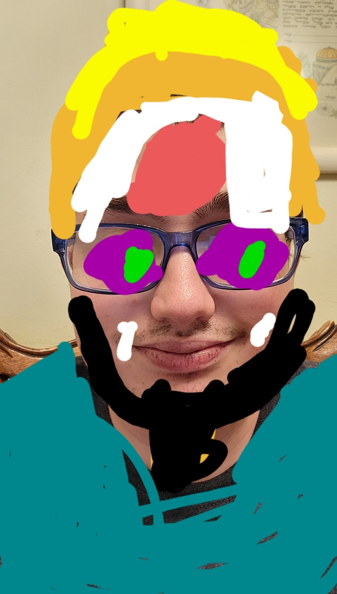

My character's name is Rainmark. And he looks like a person whose skin tone and hair are very different colors.
For my final project, I decided to create an animation short about my fictional character RainMark. It’s about RainMark going around sucking up the colors of different objects. Until he comes upon a sad living plank of wood and decides to help him. To make this short I decided to use stop-motion, I even made the living plank out of an old cardboard bow and RainMark himself out of clay. For filming I used my phone with the Stop Motion Studio app to shoot it. Did anything change from my originally storyboard concept to the finish product? I would say no because I got the shots for my video the way I wanted them to. For second attempt at stop-motion I had a lot of fun.